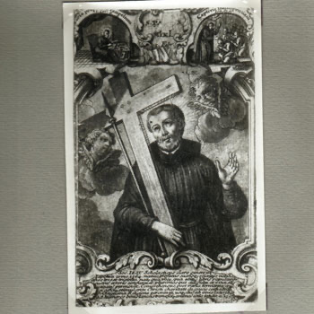
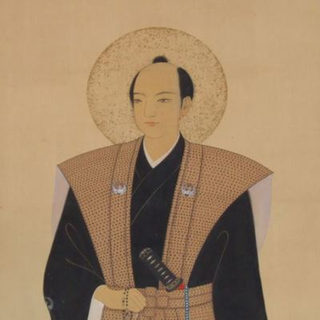

Istočnoazijski mučenici (6 svetaca)
Student teologije
Sv. Pavao Miki
1564. – 1597.
Japanski isusovac svojim je sunarodnjacima naviještao kršćansku vjeru. Uhićen s isusovačkim suradnicima, i na posljednjem putu prema Nagasakiju propovijedao je okupljenima, a umro je među dvadeset šestoricom kršćanskih mučenika.

Izvor slike


Izvor slike
- Spomendan
- 6. veljače
- Zaštitništvo
- Nije navedeno u izvoru
- Životni vijek
- 1564. – 1597.
- Djelovanje
- Misije i evangelizacija · Progoni i progonstvo · Mučeništvo
- Razdoblje
- 16. stoljeće
- Liturgijski stupanj — zajednički izvor
- Spomendan
- Rođenje — dostupni podaci
- Oko 1564.; izvori navode razdoblje 1564.–1566.; dan i mjesec nisu potvrđeni.
- Mjesto rođenja
- Područje Osake, Japan
- Datum smrti
- 05.02.1597.
- Mjesto smrti/mučeništva
- Nishizaka, Nagasaki, Japan
- Okolnosti smrti/mučeništva
- Razapet i proboden kopljima zajedno s ostalim nagasakijskim mučenicima.
- Uloga
- Student teologije
- Mučenik
- Da
- Ostale oznake
- Član skupine dvadeset šest japanskih mučenika
- Pripadnost
- Isusovac
- Drugi oblici imena
- Paul Miki · Paul · Paulus Miki
Ovaj profil upućuje na zajednički izvor „Sveti Pavao Miki i drugovi, mučenici”. Slijedi životopis skupine ili zajednički prikaz mučeništva; zajednički podaci nisu svi osobni podaci ove osobe.
Zajednički životopis
Pavao Miki bio je Japanac koji je svojim sunarodnjacima naviještao kršćansku vjeru. Kada je 5. veljače 1597. pogubljen na brdu Nishizaka kod Nagasakija, uz njega je umrlo još dvadeset pet kršćana. Među njima su bili isusovci, franjevci i laici, ljudi rođeni u Japanu i misionari pristigli iz drugih zemalja. Njihov se zajednički spomendan slavi 6. veljače.
Kršćanstvo je u Japan stiglo 1549. s Franjom Ksaverskim i njegovim isusovačkim suradnicima. Misija je rasla uz pomoć domaćih vjernika koji su prevodili, poučavali i okupljali nove zajednice. Tijekom sljedećih desetljeća broj kršćana narastao je na više stotina tisuća. Vjera se prenosila među ljudima različitih društvenih položaja, pa su se među kršćanima našli i pripadnici uglednih obitelji i oni koji su živjeli od vlastita rada. Pavao je odrastao u tome prvom naraštaju japanskih kršćana, kada je Crkva u zemlji već imala svoje zajednice i škole.
Rodio se sredinom šesnaestoga stoljeća u imućnoj obitelji koja je prihvatila kršćanstvo. Isusovci su ga školovali u Azuchiju. Oko dvadesete godine započeo je obrazovanje u njihovu sjemeništu, a otprilike dvije godine poslije stupio je u Družbu Isusovu. Učio je u okruženju u kojemu je trebalo dobro poznavati i kršćanski nauk i jezik ljudi kojima se govori. S vremenom je postao poznat kao vješt propovjednik. O Kristu je govorio na japanskome svojim sunarodnjacima. U vrijeme uhićenja pripremao se za svećeničko ređenje, ali ga nije dočekao.
Za njegova života vlasti su počele sumnjati u političku ulogu stranih misionara. Toyotomi Hideyoshi izdao je 1587. naredbu o njihovu odlasku, no ona se isprva nije dosljedno provodila. Isusovci su nastavili djelovati opreznije. Franjevci koji su početkom 1590-ih stigli s Filipina osnivali su svoje misijske zajednice i ustanove za pomoć bolesnima. Brodolom španjolskoga broda 1596. i izjave njegova kapetana dodatno su raspirili bojazan da bi se misionarski rad mogao povezati sa stranim osvajanjem. Ubrzo su uslijedila uhićenja u Kyotu i Osaki.
Pavao je uhićen s dvojicom isusovačkih suradnika, Ivanom Soanom de Gotom i Jakovom Kisaijem. Ivan je potjecao iz kršćanske obitelji s otočja Goto. Zbog progona je otišao u Nagasaki, a poslije je u isusovačkoj zajednici u Osaki služio kao vjeroučitelj i pripremao se za ulazak u Družbu Isusovu. Jakov je, nakon krštenja i obiteljskih teškoća, povjerio sina jednoj kršćanskoj obitelji. U Osaki je radio za isusovce: najprije je služio u kući, a zatim poučavao vjeru. Obojica su s Pavlom dijelila zatočeništvo i posljednji put prema Nagasakiju.
U istoj su skupini bila šestorica franjevaca i sedamnaestorica laika povezanih s franjevačkim misijama. Među franjevcima bio je Petar Krstitelj, rođen u Španjolskoj. U franjevački je red stupio kao mladić, a 1580. krenuo je u misije u Meksiko. Poslije je otišao na Filipine, gdje je vodio franjevačku zajednicu. U Japanu je sudjelovao u osnivanju franjevačkih kuća i skrbi za bolesne. Uz redovnike su stajali domaći katehisti i drugi suradnici bez kojih zajednice ne bi mogle živjeti. Među laicima su bili ljudi različitih zanimanja, od obrtnika do onih koji su služili u misijskim kućama. I oni su bili uhićeni, osuđeni i pogubljeni. Među njima su bila trojica dječaka. Jedan od misionara, Filip od Isusa, rodio se u Meksiku i boravio je na Filipinima. Ondje se vratio franjevcima i položio redovničke zavjete. Potom je krenuo brodom prema rodnoj zemlji, gdje je trebao primiti svećeničko ređenje. Brod se nasukao na japanskoj obali, pa je Filip ondje ostao s franjevačkom braćom. Tako se među dvadeset šestoricom susreću životni putovi iz Japana, Europe, Azije i Amerike.
Nakon presude zatočenike su javno osramotili odsijecanjem dijela lijevoga uha. U Kyotu su bila dvadeset četvorica osuđenika; tijekom puta pridružila su im se još dvojica. Vodili su ih kroz gradove prema Nagasakiju, na put koji je trajao približno mjesec dana. Vlasti su željele da ih ljudi vide i da njihova kazna odvrati druge od kršćanstva. Pavao je i na tome putu govorio okupljenima o vjeri; s njim je propovijedao i jedan franjevački svećenik. Prije pogubljenja isusovački su svećenici Pasio i Rodriguez uspjeli pristupiti zatvorenicima. Pavao je obnovio svoje redovničke zavjete, a Ivan de Goto i Jakov Kisai položili su prve zavjete.
Na Nishizaki su ih čekali križevi. Svakoga su pričvrstili na njegov križ, a oko vrata stavili metalni obruč. Suvremeni zapis o mučeništvu pamti različite glasove te skupine: franjevca Martina koji je molio psalmima, franjevce Franju i Gonzala koji su glasno molili te dječake Ludovika i Antuna.
Pavao je s križa progovorio ljudima koji su se okupili na mjestu pogubljenja. Među nazočnima bio je i otac Ivana de Gota. Pavao se predstavio kao Japanac i isusovac te rekao da umire zbog evanđelja koje je naviještao. Govorio je o Kristu, oprostio svojim progoniteljima i pozvao ih na krštenje. Zatim se obratio svojim drugovima, hrabreći ih u posljednjim trenutcima. Vojnici su ih usmrtili probadanjem kopljima. Bilo je to 5. veljače 1597., u Nagasakiju koji je već bio jedno od glavnih središta japanskoga kršćanstva.
U sljedećim desetljećima vlasti su pojačavale zabrane i kažnjavale nove skupine kršćana. Mnogi su umrli, a drugi su vjeru nastavili živjeti prikriveno. Obitelji su prenosile molitve i krstile djecu i onda kada u blizini nije bilo svećenika. Kada su u devetnaestome stoljeću misionari ponovno mogli doći u Nagasaki, ondje su zatekli potomke tih skrivenih zajednica. Kršćanska vjera tako se prenosila i tijekom dugoga razdoblja bez javnoga crkvenog života.
Papa Pio IX. proglasio je Pavla Mikija i njegovih dvadeset pet drugova svetima 8. lipnja 1862. Na Nishizaki se danas čuvaju njihova imena. Zajednički spomendan okuplja sjećanje na propovjednika Pavla, na Ivana i Jakova iz njegove isusovačke zajednice, na franjevce s Petrom Krstiteljem te na laike i dječake koji su s njima umrli. Njihov je život bio ukorijenjen u različitim krajevima i službama, a na istome su brdu dali svjedočanstvo vjere koju su primili i naviještali.
Pročitaj više na izvornoj stranici ↗
Molitve i dodatni sadržaji
Misli
Jedini razlog zašto sam ubijen je to što sam poučavao Kristov nauk. Zahvaljujem Bogu da sam zato umro.Misli svetaca